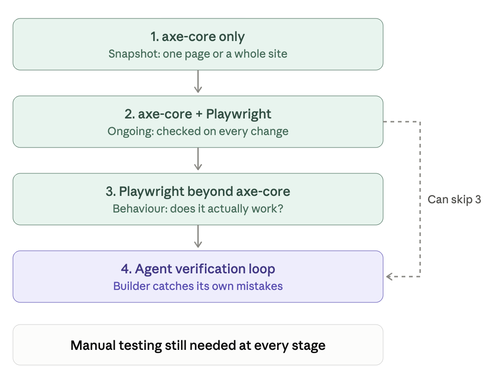

SPACEBAR to move forward through slides.
SHIFT & SPACEBAR to move backwards through slides.
LEFT ARROW & RIGHT ARROW to move through sections.
ESC to see overview and ESC again to exit.
F to enter presentation mode and ESC to exit.
Before we start: I'm no expert in any of this!
At some point, you may find yourself engaging with technical teams who use axe-core or Playwright.
You already know how to test accessibility. These tools help automate parts of that process.
axe-core is an accessibility testing engine.
If you’ve used the axe DevTools browser extension, you’ve already used axe-core.
It’s the engine inside that extension, and inside many other accessibility tools, including Lighthouse.
axe-core runs inside the web page itself.
Page loads
↓
axe-core runs inside the page
↓
axe-core returns its resultsThat's the basic process behind axe-core testing.
The extension, command line and Playwright all use the same testing engine, but in different ways.
So axe-core gives us automated accessibility testing, not a complete accessibility audit.
Developers usually run axe-core through automated tools.
But we can run it directly in the browser console to see how the engine works.
Some teams run axe-core from the command line to check individual pages or multiple pages at once.
console1.mp4, console2.mp4, console3.mp4, console4.mp4
Same axe-core engine but with more power!
Some development teams stop here. They use axe-core from the terminal to run accessibility checks across multiple pages, without ever using Playwright.
But other teams want to go further. That's where Playwright comes in.
Playwright is a browser automation and testing framework.
It can control a browser much like a person would.
This means Playwright can get an application into the exact state we want to test.
Open checkout page
↓
Add a product to the cart
↓
Open the cart dialog
↓
Run an accessibility testPlaywright and axe-core work well together.
axe-core can check a page, but it can’t navigate through an application.
Playwright can do the navigating, then run axe-core in the page it has opened.
There’s even an official package that connects the two:
@axe-core/playwright
But Playwright can also test accessibility-related behaviour without axe-core.
Developers can write JavaScript scripts that tell Playwright what to do in a browser.
Once Node.js is installed, developers can install Playwright and a browser with two commands:
npm install -D @playwright/test
npx playwright install chromiumDevelopers write their tests in JavaScript, then run them with:
npx playwright testtest('Escape closes the dialog and returns focus', async ({ page }) => {
const trigger = page.getByRole('button', { name: 'Open settings' });
await trigger.click();
await expect(page.getByRole('dialog')).toBeVisible();
await page.keyboard.press('Escape');
await expect(page.getByRole('dialog')).toBeHidden();
await expect(trigger).toBeFocused();
});Playwright can be used in two powerful ways during development.
Playwright can watch for changes in code and automatically rerun tests.
This means developers can find accessibility issues while they're working, rather than waiting for a formal audit.
Developers can also run Playwright tests automatically whenever code is submitted.
This is called continuous integration, or CI.
Developer changes code
↓
Tests run automatically
↓
All tests pass? → Code can progress
Any test fails? → Code is blockedEvery Playwright test either passes or fails.
So a failing accessibility test can stop inaccessible code from reaching users.
For example, a team might fail the build on every axe-core violation, or only on serious and critical issues.
Who decides what should cause a failure? That's where accessibility specialists can help.
Developers can write scripts that use Playwright to test how components behave.
Here are some examples:
As mentioned before, developers write the tests. Accessibility specialists can help define what those tests should check.
Some teams are now combining AI agents with axe-core and Playwright to take automation even further.
You describe how a dialog should manage focus, and an agent turns that into a Playwright test.
An agent can navigate a page, interact with components and check results, without a pre-written test script.
Agents can plan tests, generate scripts and attempt to repair failing tests.
Build, test, fix, repeat.
These tools can catch lots of mistakes before a human looks.
The agent can write the test. Accessibility teams can define what “correct” looks like.
